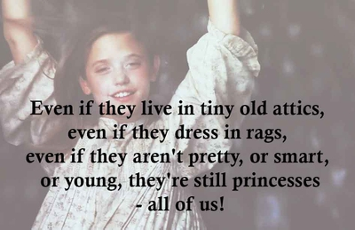
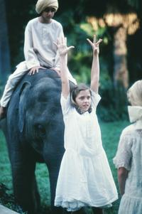

About
This website highlights the movie,
"The Little Princess."
A young girl who has to endure the obstacles that come her way at such a young age.
This movie, "The Little Princess," gave me so much imgination as a little girl. Growing up life was hard, but having movies like this, reminded me to be a kid; and have fun!!! Use your imagination, even in the worst circumstances.

Quotes
This is one of my favorite quotes. (enclosed on img.) The reason I appreciate this quote: Everyone in this world needs to know their worth. We are all on the same level no matter our: education, race, life experience.

Characteristics
I love Sarah's creative Story Telling.
She brings her stories to life.
You feel like, you are there with her; hence also the visuals help from the movie.
Sara, is a very kind person. She thinks the best in everyone. After you watch the movie you can't help but want to imitate Sara. We all need more a little more Sara in our lives.

Friends
Becky becomes a dear friend to Sara for life. However the following girls really appreciate Sara and her stories:
{kind=link}
{kind=link}
{kind=link}
{kind=link}
{kind=link}
{kind=link}